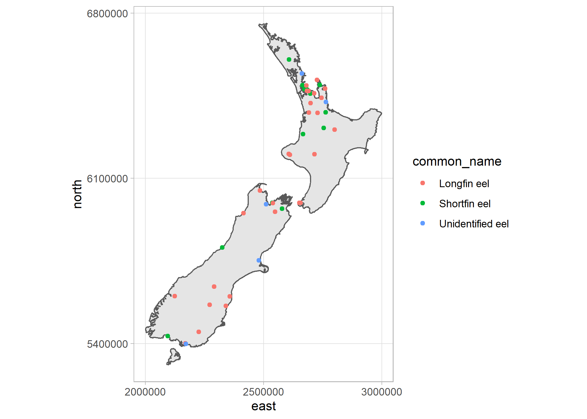

The purpose of this package is to allow for direct access to the NZ Freshwater Fish Database (NZFFD) from R and additional functions for cleaning imported data and adding missing data.
Installation
# devtools::install_github("flee598/nzffdr")
library(nzffdr)Built-in datasets
There are four built-in datasets to assist, these are:
nzffd_dataa subset of 200 rows from the NZFFD, used for examples, tutorials etc.nzffd_methoda dataframe containing all the different fishing methods included in the NZFFD, it is possible to search the database using these terms so they are provided for reference.nzffd_speciesa dataframe of the scientific and common names of all species included in the NZFFD. It is possible to search the database by species name (using scientific or common names) so these are provided for reference.nzffd_nzmapa simple features map of New Zealand. A simplified version of the 1:150k NZ map outline available from Land Information New Zealand.
Getting data
Start by importing some data. We have tried to make the search terms match those you would use directly on the Niwa site. For example leaving a search field blank will return all records. There are seven search arguments:
catchmentthis refers to the Catchment No. a 6 digit number unique to the reach of interest. You can search using the inidviual number (e.g.catchment = "702.500"), or for all rivers in a catchment you can use the wildcard search term (e.g.catchment = "702%"), or don’t set the arg if you want all catchments in NZ.riversearch for a river by name, to get all records for the Clutha (e.g.river = "Clutha").locationsearch for river by location e.g. (location = "Nelson").fish_methodsearch by fishing method used. There are 59 different possible options forfish_method, if you want to search for a specific fishing method usenzffd_method()to see a list of all possible options, you can then copy/paste from there (e.g. if we only wanted fish caught by lures usefish_meth = "Angling - Lure") don’t set the arg if you want all fishing methods.speciessearch for a particular species. There are 75 different possible options forspecies, usenzffd_species()to see a list of all possible options. You can search using either common or scientific names and can search for multiple species at once. e.g. to search for Black mudfish usespecies = "Black mudfish"orspecies = "Neochanna diversus"and to search for Black mudfish and Bluegill bully usespecies = c("Black mudfish", "Bluegill bully")etc.startsstarting search date, 1850 at the earliest.endsending search date.
This function requires an internet connection to query Niwa’s database.
Data citation: Crow S (2017). New Zealand Freshwater Fish Database. Version 1.2. The National Institute of Water and Atmospheric Research (NIWA). Occurrence Dataset https://doi.org/10.15468/ms5iqu
# import all records between 2000 and 2010
dat <- nzffd_import(catchment = "", river = "", location = "",
fish_method = "", species = "", starts = 2000, ends = 2010)
head(dat)
#> card m y catchname catch locality time org map east
#> 1 294 5 2000 Long B 075.000 Unnamed stream Long Bay arc r10 2664600
#> 2 294 5 2000 Long B 075.000 Unnamed stream Long Bay arc r10 2664600
#> 3 294 5 2000 Long B 075.000 Unnamed stream Long Bay arc r10 2664600
#> 4 295 5 2000 Long B 075.000 Unnamed stream Long Bay arc r10 2664600
#> 5 295 5 2000 Long B 075.000 Unnamed stream Long Bay arc r10 2664600
#> 6 295 5 2000 Long B 075.000 Unnamed stream Long Bay arc r10 2664600
#> north altitude penet fishmeth effort pass spcode abund number minl maxl
#> 1 6499800 30 3 gmt 6 NA galfas 2 95 110
#> 2 6499800 30 3 gmt 6 NA gobhut 2 80 85
#> 3 6499800 30 3 gmt 6 NA parane 1 40 NA
#> 4 6499800 30 3 fyn 3 NA gobgob 1 150 NA
#> 5 6499800 30 3 fyn 3 NA galfas 3 130 135
#> 6 6499800 30 3 fyn 3 NA parane 2 70 75
#> nzreach
#> 1 2004154
#> 2 2004154
#> 3 2004154
#> 4 2004154
#> 5 2004154
#> 6 2004154
# To import the entire NZFF database:
# dat <- nzffd_import()Cleaning data
While the data imported from NZFFD is in pretty good shape there are some small inconsistencies. The nzffd_clean() function aims to deal with some of these inconsistencies. In particular text strings have been standardised. The first letter of all words in catchname and locality are capitalised and any non-alphanumeric characters are removed. time is converted to a standardised 24 hour format and nonsesical values converted to NA. org is converted to all lowercase and has non-alphanumeric characters removed. map is converted to lower case and has any non-three digit codes converted to NA. catchname codes are tidied following the suggested abbreviations, e.g. “Clutha River”, “Clutha r” and “Clutha river” all become Clutha R. Finally a new variable form is added which defines each observation as from one of the following systems: Creek, River, Tributary, Stream, Lake, Lagoon, Pond, Burn, Race, Dam, Estuary, Swamp, Drain, Canal, Tarn, Wetland, Reservoir, Brook, Spring, Gully or NA.
dat2 <- nzffd_clean(dat)
head(dat2)
#> card m y catchname catch locality time org map east
#> 1 294 5 2000 Long B 075.000 Unnamed Stream Long Bay NA arc r10 2664600
#> 2 294 5 2000 Long B 075.000 Unnamed Stream Long Bay NA arc r10 2664600
#> 3 294 5 2000 Long B 075.000 Unnamed Stream Long Bay NA arc r10 2664600
#> 4 295 5 2000 Long B 075.000 Unnamed Stream Long Bay NA arc r10 2664600
#> 5 295 5 2000 Long B 075.000 Unnamed Stream Long Bay NA arc r10 2664600
#> 6 295 5 2000 Long B 075.000 Unnamed Stream Long Bay NA arc r10 2664600
#> north altitude penet fishmeth effort pass spcode abund number minl maxl
#> 1 6499800 30 3 gmt 6 NA galfas <NA> 2 95 110
#> 2 6499800 30 3 gmt 6 NA gobhut <NA> 2 80 85
#> 3 6499800 30 3 gmt 6 NA parane <NA> 1 40 NA
#> 4 6499800 30 3 fyn 3 NA gobgob <NA> 1 150 NA
#> 5 6499800 30 3 fyn 3 NA galfas <NA> 3 130 135
#> 6 6499800 30 3 fyn 3 NA parane <NA> 2 70 75
#> nzreach form
#> 1 2004154 Stream
#> 2 2004154 Stream
#> 3 2004154 Stream
#> 4 2004154 Stream
#> 5 2004154 Stream
#> 6 2004154 Stream
# quick check for changes in the number of different catchment names (a
# reduction means, names have successfully been recoded)
length(unique(dat$catchname))
#> [1] 888
length(unique(dat2$catchname))
#> [1] 791The above changes, while superficial make analysis that, for example relies on grouping, work as intended.
Filling gaps
Some additional useful information can quickly be added to the dataset. the nzffd_fill() function adds columns giving the species’ common name (common_name), scientific name (genus + species, sci_name), family, genus, species, threat classification status (threat_class) and weather the species is native or introduced (native).
Additionally, both the map and altitude variables have some NA values, here we can fill most of them with nzffd_fill(). To fill map and altitude we run the observation coordinates (NZMG) against a raster projection of the (NZMS260 MapTiles) and an 8m digital elevation model (DEM) of NZ. Note the ‘altitude’ values are not exact so we suggest they are used in an exploratory manner only.
# check number of NA's in input variables map and altitude
sum(is.na(dat2$map))
#> [1] 908
sum(is.na(dat2$altitude))
#> [1] 592
dat3 <- nzffd_fill(dat2, alt = TRUE, maps = TRUE)
# check number of NA's in output variables map and altitude, NA's have been dealt with
sum(is.na(dat3$maps))
#> [1] 0
sum(is.na(dat3$altitude))
#> [1] 0
# check new columns have been added
head(dat3)
#> spcode card m y catchname catch locality time org
#> 1 aldfor 30488 3 2009 Avon R 666.000 Bexley Wetland NA docc
#> 2 aldfor 111010 11 2003 Whanganui R 333.000 Whanganui River NA uow
#> 3 aldfor 30382 5 2009 Ruamahanga R 292.000 Lake Onoke NA wnrc
#> 4 aldfor 7689 9 2001 Wairoa R 085.000 Wairoa River NA niwa
#> 5 aldfor 21454 2 2002 Long B 075.000 Unnamed Stream Long Bay NA nscc
#> 6 aldfor 105767 4 2005 Waimapu S 144.000 Waimapu Stream NA uow
#> map east north altitude penet fishmeth effort pass abund number minl
#> 1 m35 2487482 5742964 5 1 ntc 32 NA <NA> 36 95
#> 2 R10 2687692 6143373 9 11 efb 324 1 <NA> 1 NA
#> 3 r28 2686241 5978218 5 7 sen NA NA a NA NA
#> 4 s11 2692300 6465800 5 7 ntc 7 NA a 15 275
#> 5 r10 2665859 6500387 10 1 han NA NA <NA> 6 NA
#> 6 u14 2787148 6379884 10 2 efb 1522 NA <NA> 1 NA
#> maxl nzreach form common_name sci_name family
#> 1 271 13045924 Wetland Yelloweye mullet Aldrichetta forsteri Mugilidae
#> 2 NA 7029252 River Yelloweye mullet Aldrichetta forsteri Mugilidae
#> 3 NA 9016280 Lake Yelloweye mullet Aldrichetta forsteri Mugilidae
#> 4 345 2007061 River Yelloweye mullet Aldrichetta forsteri Mugilidae
#> 5 150 2004122 Stream Yelloweye mullet Aldrichetta forsteri Mugilidae
#> 6 NA 4001685 Stream Yelloweye mullet Aldrichetta forsteri Mugilidae
#> genus species threat_class native
#> 1 Aldrichetta forsteri not threatened native
#> 2 Aldrichetta forsteri not threatened native
#> 3 Aldrichetta forsteri not threatened native
#> 4 Aldrichetta forsteri not threatened native
#> 5 Aldrichetta forsteri not threatened native
#> 6 Aldrichetta forsteri not threatened nativeAdding River Environment classification data
We can also add associated network topology and environmental information from the River Environment Classification database (REC) using nzffd_add(). This function takes the nzreach variable and matches it again the corresponding NZREACH variable in the REC database and imports all the REC data. Note this will add 24 new columns to your dataframe, with the original REC column names, we suggest renaming the REC columns as they are a bit fiendish as is.
This function requires an internet connection to query the REC database.
# check number of columns before REC data has been added
dim(dat3)
#> [1] 58768 30
# add REC data
dat4 <- nzffd_add(dat3)
# check number of columns after REC data has been added
dim(dat4)
#> [1] 58768 54You should now have a cleaned up dataframe of NZFFD records available to you, optionally along with some missing data and associated REC data.
Mapping observations
There is a simple features map of New Zealand included in the package, this can be used to quickly check species distributions and the like.
# ggplot2 for nice figures
# sf library for setting map crs
library(ggplot2)
library(sf)
# get map of NZ and remove Chatham Islands
nz <- nzffdr::nzffd_nzmap
nz <- subset(nz, name != "Chatham Island")
# use built-in subset of NZFFD data
eels <- nzffdr::nzffd_data
# add scientific and common names for species
eels <- nzffdr::nzffd_fill(eels)
# filter just eels species
eels <- subset(eels, genus == "Anguilla")
# create a basic map, with points coloured by species common names
ggplot() +
geom_sf(data = nz) +
geom_point(data = eels, aes(x = east, y = north, colour = common_name), size = 1.5) +
scale_x_continuous(breaks = c(2e6, 25e5, 3e6)) +
scale_y_continuous(breaks = c(54e5, 61e5, 68e5)) +
coord_sf(datum = sf::st_crs(27200)) +
theme_light()